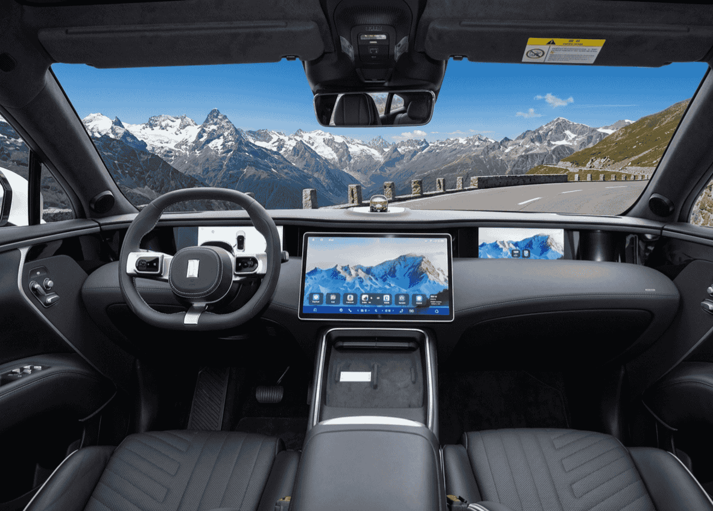

En el panorama de los SUV eléctricos premium, la oferta hasta hace poco se limitaba a las propuestas de los fabricantes europeos y Tesla. Pero 2026 marca un punto de inflexión: los fabricantes chinos están desembarcando en Europa con productos que no solo compiten en precio, sino en tecnología, calidad y prestaciones al más alto nivel.
El Avatr 11 es probablemente el ejemplo más claro de esta nueva ola. No estamos ante otro SUV chino "low cost". Estamos ante un vehículo que ha sido diseñado desde cero para competir contra el BMW iX xDrive50, el Mercedes EQE SUV y el Audi Q8 e-tron, y que en muchos aspectos técnicos —especialmente en tecnología de conducción asistida— los supera.
¿Qué es Avatr y quién está detrás?
Avatr Technology no es una marca cualquiera. Es el resultado de una alianza estratégica entre tres gigantes chinos, cada uno aportando lo mejor de su sector:
- Changan Automobile: Uno de los cuatro mayores fabricantes de automóviles de China, con más de 160 años de historia y experiencia en producción masiva. Changan desembarcó oficialmente en España en enero de 2026 con una inversión anunciada de 2.000 millones de euros para el mercado europeo.
- Huawei (tecnología "Huawei Inside"): El gigante tecnológico aporta todo el ecosistema digital: sistema operativo HarmonyOS, sistema de conducción autónoma ADS, conectividad 5G, procesamiento de inteligencia artificial y la integración de 3 sensores LiDAR.
- CATL (baterías): El mayor fabricante mundial de baterías para vehículos eléctricos suministra las celdas de alta densidad energética que alimentan al Avatr 11, con capacidades de hasta 116,79 kWh.
Esta combinación es única en la industria: experiencia automotriz + tecnología punta + las mejores baterías del mundo. Y el resultado es un producto que, sobre el papel, tiene todo para plantar cara a los alemanes en su propio terreno.
Diseño exterior: futurismo con presencia
El Avatr 11 es un coche que no pasa desapercibido. Su diseño exterior rompe con la estética conservadora de muchos SUV eléctricos europeos y apuesta por líneas fluidas, agresivas y decididamente futuristas.
Elementos de diseño destacados:
- Frontal minimalista: Sin parrilla tradicional, con firma luminosa LED de punta a punta que actúa como DRL y señalización
- Silueta coupé-SUV: Línea de techo descendente que le da un perfil deportivo poco habitual en SUV de este tamaño
- Techo panorámico de cristal: De serie en todas las versiones, amplía visualmente el habitáculo
- Manillas enrasadas: Se despliegan electrónicamente al acercarse, mejorando aerodinámica
- Llantas de gran tamaño: Diseño exclusivo que refuerza la presencia
Dimensiones:
Largo
4.880 mm
Ancho
1.970 mm
Alto
1.640 mm
Batalla
2.930 mm
Son unas dimensiones generosas que lo sitúan en el mismo segmento que un BMW iX (4.953 mm de largo) o un Mercedes EQE SUV (4.863 mm), garantizando espacio de sobra para cinco ocupantes y un maletero amplio.
Interior y habitabilidad

El interior del Avatr 11 está dominado por la enorme pantalla central y materiales de primera calidad
Si el exterior impresiona, el interior del Avatr 11 es donde Huawei despliega toda su artillería tecnológica. El habitáculo es una combinación de lujo, minimalismo y digitalización extrema.
Elementos destacados del interior:
- Pantalla central de 15,6 pulgadas: Sistema de infotainment basado en HarmonyOS de Huawei, con respuesta táctil rápida, navegación integrada y control completo del vehículo
- Cuadro de instrumentos digital: Pantalla tras el volante con información personalizable del vehículo
- Asientos de cuero Nappa: Con calefacción, ventilación y masaje en versiones superiores
- Sistema de sonido premium: Altavoces de alta fidelidad integrados con procesamiento digital avanzado
- Iluminación ambiental: LED personalizable en múltiples colores
- Amplio espacio trasero: La batalla de 2.930 mm garantiza excelente espacio para las piernas en las plazas traseras
- Maletero generoso: Capacidad suficiente para viajes familiares, con frunk (maletero delantero) adicional
La filosofía de diseño interior sigue la tendencia de pocos botones físicos y mucho control digital, algo que puede gustar más o menos según las preferencias personales, pero que en el Avatr 11 se ejecuta con un nivel de refinamiento muy alto.
Ficha técnica completa
📋 Ficha técnica del Avatr 11
| Marca / Modelo | Avatr 11 |
| Tipo | SUV eléctrico premium (BEV) |
| Dimensiones | 4.880 × 1.970 × 1.640 mm |
| Distancia entre ejes | 2.930 mm |
| Peso | ≈ 2.500 kg |
| Tracción | RWD (trasera) / AWD (integral) |
| Potencia (AWD) | 578 CV (425 kW) |
| 0-100 km/h | 3,9 segundos (AWD) |
| Batería | CATL 90 kWh / 116,79 kWh |
| Autonomía (WLTP) | Hasta 475 km |
| Autonomía (NEDC) | Hasta 600 km |
| Carga rápida DC | 10-80% en ~30 minutos (240 kW) |
| Plataforma tecnológica | Huawei Inside (HI) |
| Sensores ADAS | 3 LiDAR + 6 radares + 12 cámaras |
| Infotainment | HarmonyOS, pantalla 15,6" |
| Precio estimado (Europa) | 55.000 – 70.000€ |
Tecnología Huawei Inside: la gran baza
Si hay algo que diferencia al Avatr 11 de sus competidores europeos, es el nivel de tecnología de asistencia a la conducción y conectividad. Aquí es donde Huawei marca la diferencia de forma contundente.
🧠 Huawei ADS (Advanced Driving System)
El sistema de conducción autónoma del Avatr 11 es uno de los más avanzados disponibles comercialmente. Su hardware incluye:
📡 Arsenal de sensores del Avatr 11:
- 3 sensores LiDAR: Proporcionan un mapa tridimensional del entorno con precisión milimétrica, detectando objetos a gran distancia incluso en condiciones de poca visibilidad
- 6 radares de ondas milimétricas: Detección de objetos en movimiento, especialmente eficaces con lluvia o niebla
- 12 cámaras de alta resolución: Cobertura visual 360° completa alrededor del vehículo
- 12 sensores ultrasónicos: Para maniobras de aparcamiento y baja velocidad
Todo este hardware está gestionado por el chip de computación de Huawei, capaz de procesar 400 TOPS (billones de operaciones por segundo) de datos en tiempo real.
Funcionalidades de conducción asistida:
- Control de crucero adaptativo inteligente: Se adapta al flujo del tráfico con gestión predictiva
- Cambio de carril automático: El coche puede cambiar de carril de forma autónoma tras activar el intermitente
- Conducción autónoma en autopista: Mantiene carril, velocidad y distancia sin intervención constante
- Aparcamiento autónomo remoto: El coche se aparca solo mientras tú lo observas desde la app
- Frenado automático de emergencia: Con reconocimiento de peatones, ciclistas y vehículos
- Alerta de tráfico cruzado: Trasero y delantero
Para poner esto en perspectiva: la mayoría de competidores europeos en este rango de precio llevan 0 o 1 sensor LiDAR. El Avatr 11 lleva 3. Esto le da una capacidad de percepción del entorno significativamente superior, especialmente en situaciones complejas como intersecciones urbanas, condiciones de baja luz o entornos con muchos peatones.
📱 HarmonyOS: el ecosistema digital completo
El sistema operativo HarmonyOS de Huawei no es solo un "software del coche": es un ecosistema completo que conecta el vehículo con tu vida digital:
- Integración con dispositivos Huawei (teléfono, tablet, reloj, casa inteligente)
- Actualizaciones OTA (over the air) que mejoran el coche con el tiempo
- Asistente de voz con IA capaz de entender contexto y comandos complejos
- Navegación con información de tráfico en tiempo real y planificación de rutas con paradas de carga
- Conectividad 5G integrada para streaming, videollamadas y servicios en la nube
Batería, autonomía y carga
La batería es otro de los puntos fuertes del Avatr 11, gracias a la colaboración con CATL, el mayor fabricante mundial de baterías para vehículos eléctricos.
Opciones de batería disponibles:
- Batería estándar (90 kWh): Disponible con tracción trasera (RWD), ofrece autonomía suficiente para uso urbano y periurbano
- Batería grande (116,79 kWh): La opción superior, disponible con AWD, ofrece hasta 475 km WLTP de autonomía
⚠️ Importante: NEDC vs WLTP
Es habitual ver cifras de 600 km de autonomía para el Avatr 11, pero esa cifra corresponde al ciclo NEDC utilizado en China, que es significativamente más optimista que el WLTP europeo.
La autonomía real según el estándar europeo WLTP es de hasta 475 km. En condiciones de uso real (mixto urbano-carretera, con climatización), se puede esperar una autonomía de 350-420 km, que es plenamente competitiva en su segmento.
Carga rápida:
El Avatr 11 soporta carga rápida en corriente continua (DC) de hasta 240 kW, lo que permite:
- 10-80% en aproximadamente 30 minutos: Ideal para paradas técnicas en viajes largos
- Carga AC (corriente alterna): Hasta 11 kW para carga doméstica nocturna (carga completa en 8-10 horas)
Estos tiempos de carga son perfectamente competitivos con los mejores del segmento y permiten realizar viajes de larga distancia con paradas breves. Si quieres optimizar los costes de carga, consulta nuestra guía para ahorrar cargando tu coche eléctrico.
Conducción y prestaciones
Con 578 CV (425 kW) en versión AWD, el Avatr 11 no es precisamente un coche lento. De hecho, es uno de los SUV eléctricos más potentes en su rango de precio.
Potencia máxima
578 CV
(425 kW) AWD
0-100 km/h
3,9 s
versión AWD
Velocidad máx.
200 km/h
limitada electrónicamente
Características de conducción:
- Suspensión neumática adaptativa: Ajusta la altura y la firmeza según el modo de conducción y las condiciones de la carretera
- Frenado regenerativo multinivel: Varios niveles de recuperación de energía, desde suave hasta conducción con un solo pedal
- Modos de conducción: Eco, Confort, Sport y personalizado, cada uno ajustando respuesta del acelerador, suspensión y dirección
- Control de estabilidad avanzado: Con gestión electrónica independiente de cada rueda en la versión AWD
- Asistencia en pendientes: Tanto en subida como en bajada
Es un coche de más de 2.500 kg, así que no hay que esperar la agilidad de un deportivo compacto. Pero dentro de su categoría (SUV eléctrico premium), las prestaciones son de primer nivel y la experiencia de conducción debería ser refinada gracias a la suspensión neumática y al excelente aislamiento acústico.
Competencia directa: ¿a quién se enfrenta?
El Avatr 11 compite directamente con los SUV eléctricos premium europeos y Tesla. Veamos cómo se compara:
| Característica | Avatr 11 | BMW iX xDrive50 | Tesla Model X | Audi Q8 e-tron |
|---|---|---|---|---|
| Potencia | 578 CV | 523 CV | 670 CV | 408 CV |
| Batería | 116,79 kWh | 111,5 kWh | 100 kWh | 114 kWh |
| Autonomía WLTP | ~475 km | 630 km | 576 km | 582 km |
| 0-100 km/h | 3,9 s | 4,6 s | 3,9 s | 5,6 s |
| Sensores LiDAR | 3 | 0 | 0 | 0 |
| Precio estimado | 55.000-70.000€ | 85.000€ | 99.990€ | 74.000€ |
Los datos hablan por sí solos. El Avatr 11 ofrece más potencia que el BMW iX y el Audi Q8 e-tron, aceleración al nivel del Tesla Model X, la batería más grande del grupo, y el único sistema con LiDAR. Y todo ello a un precio potencialmente inferior al de cualquiera de sus rivales.
Donde pierde terreno es en la autonomía WLTP, donde con 475 km queda por debajo de competidores que superan los 580 km. Esto puede deberse a su peso, aerodinámica o eficiencia del tren motriz, y es un factor a tener en cuenta especialmente para quienes hagan muchos viajes largos.
✅ Ventajas competitivas del Avatr 11:
- • Precio: Hasta 30.000€ menos que competidores directos europeos
- • Tecnología ADAS: 3 LiDAR donde los rivales llevan 0
- • Potencia: 578 CV superando a BMW iX y Audi Q8 e-tron
- • Batería: La mayor capacidad del segmento (116,79 kWh)
- • Equipamiento de serie: Nivel de dotación superior al de muchos rivales incluso con extras
❌ Puntos a mejorar:
- • Autonomía WLTP: Menor que competidores con baterías similares
- • Red de servicio: Aún en construcción en Europa
- • Marca desconocida: Falta de historial y confianza de marca en el mercado europeo
- • Valor residual: Incierto al ser marca nueva, lo que puede afectar a financiación y renting
Llegada a España: precio y disponibilidad
La llegada del Avatr 11 a España está directamente vinculada al desembarco de Changan Automobile en el mercado europeo, que se produjo oficialmente en enero de 2026 con un compromiso de inversión de 2.000 millones de euros.
Lo que sabemos hasta ahora:
- Changan ya opera en España: Desde enero de 2026, con estructura comercial en marcha
- Avatr 11 previsto para 2026: Aunque no se ha confirmado fecha exacta de comercialización en España
- Precio estimado para Europa: Entre 55.000 y 70.000€ según versión y equipamiento
- Red de distribución: En proceso de establecimiento, con concesionarios y puntos de servicio que se irán anunciando
Rango de precios estimado:
Versión RWD (90 kWh)
~55.000€
Precio estimado de entrada
Versión AWD (116 kWh)
~65.000-70.000€
Versión tope de gama
Si estos precios se confirman, el Avatr 11 ofrecerá una relación calidad-precio-tecnología difícil de igualar. Un BMW iX comparable cuesta 85.000€, un Tesla Model X supera los 99.000€ y un Audi Q8 e-tron parte de 74.000€.
Por supuesto, comprar un coche de una marca nueva en Europa conlleva incertidumbres: garantías reales, red de servicio, disponibilidad de recambios, valor residual... Son factores que cada comprador debe valorar. Pero en términos de producto puro, lo que ofrece el Avatr 11 por su precio es objetivamente impresionante.
Si estás pensando en financiar la compra, te recomiendo consultar nuestra comparativa de préstamos para coches eléctricos y revisar las ayudas disponibles en 2026 que podrían reducir significativamente el coste final.
Preguntas frecuentes sobre el Avatr 11
FAQ – Avatr 11
🔹 ¿Cuándo llega el Avatr 11 a España?
Changan desembarcó oficialmente en España en enero de 2026 con una inversión de 2.000 millones de euros. El Avatr 11 está previsto para comercializarse en España durante 2026, aunque no se ha confirmado una fecha exacta. La marca está estableciendo su red de distribución y servicio postventa en el mercado europeo. Te mantendremos informados de cualquier novedad sobre la fecha de llegada.
🔹 ¿Cuánto costará el Avatr 11 en España?
El precio estimado del Avatr 11 para el mercado europeo se sitúa entre 55.000 y 70.000 euros, dependiendo de la versión (RWD o AWD) y el nivel de equipamiento. Este rango lo posiciona como competidor directo del BMW iX, Tesla Model X, Audi Q8 e-tron y Mercedes EQE SUV, pero con un precio significativamente inferior y un nivel de equipamiento tecnológico superior de serie gracias a la integración de Huawei Inside con 3 sensores LiDAR.
🔹 ¿Qué autonomía real tiene el Avatr 11?
El Avatr 11 ofrece hasta 475 km de autonomía en ciclo WLTP con la batería CATL de 116,79 kWh. Es importante no confundir con la cifra NEDC de 600 km que se utiliza en China. En condiciones reales de uso mixto urbano-carretera, se puede esperar una autonomía de 350-420 km dependiendo del estilo de conducción, uso de climatización y temperatura exterior. La versión RWD con batería de 90 kWh ofrece autonomía menor pero puede ser suficiente para uso diario urbano.
🔹 ¿Qué tecnología Huawei lleva el Avatr 11?
El Avatr 11 integra la plataforma completa Huawei Inside (HI), que incluye: el sistema de conducción autónoma Huawei ADS con 3 sensores LiDAR, 6 radares de ondas milimétricas y 12 cámaras para percepción 360°; el sistema de infotainment HarmonyOS con pantalla central de 15,6 pulgadas; conectividad 5G; procesamiento de inteligencia artificial avanzado con capacidad de 400 TOPS; y funciones como cambio de carril automático, estacionamiento autónomo remoto, control de crucero adaptativo inteligente y frenado de emergencia con reconocimiento de peatones y ciclistas. Es actualmente uno de los sistemas de conducción asistida más completos disponibles comercialmente.
Conclusión: ¿merece la pena esperar al Avatr 11?
El Avatr 11 es, sobre el papel, uno de los productos más interesantes que van a llegar al mercado europeo de SUV eléctricos premium. La combinación de 578 CV, batería de 116 kWh, 3 sensores LiDAR, tecnología Huawei y un precio estimado de 55.000-70.000€ lo convierte en una propuesta muy difícil de igualar por la competencia establecida.
Pero hay que ser honesto: comprar un coche de una marca sin historial en Europa siempre implica cierto riesgo. La red de servicio aún se está construyendo, el valor residual es incierto, y no hay datos de fiabilidad a largo plazo en nuestras carreteras. Para quienes valoran la seguridad de una marca establecida, BMW, Audi o Mercedes siguen siendo opciones sólidas, aunque más caras.
Sin embargo, si valoras la tecnología punta, las prestaciones de primer nivel y la relación calidad-precio por encima de todo, el Avatr 11 merece mucho la pena estar en tu lista de candidatos. Es exactamente el tipo de producto que demuestra que la competencia china ya no es "low cost": es competencia real al más alto nivel.
Lo seguiremos de cerca y actualizaremos esta review con datos de pruebas reales en cuanto el vehículo esté disponible en España.